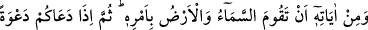
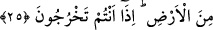

Böylece o ayna cilâlanır da
İbâdetle gönle bir arınma gelir
Ama ayna aslından bozuksa,
Cilâ onu pek uzun bir zamanda temiz hâle getirebilir
İyi bil ki bu akıllar, birbirinden farklıdır
Derece bakımından yerden göğe kadar
Akıl vardır, güneş yuvarlağına benzer.
Akıl vardır, ateş yalımına benzer
Akıl vardır, hoşça yanan kandile benzer;
Akıl vardır, ateş yalımına benzer
Cüz’î akıl, küllî aklın adını kötüye çıkarmıştır.
Dünyâ isteği, insanı isteksiz bir hâle getirmiştir
et-Te’vîlâtü’n-Necmiyye’de der ki: “Yine O’nun delillerindendir ki, size korku ve
ümit vermek üzere şimşeği gösteriyor,” yâni beşeriyyet hicabları bulutlarının delinmesi
ve rûhâniyet nurlarının parıltıları ortaya çıktığında Hakk’ın şâhidleri şimşeğini
gösteriyor. Onun başlangıcı şimşek gibi çakmak (burûk), sonra levâmi‘, sonra, tavâli‘,
sonra işrâk, sonra da tecellîdir.
Berk/şimşek nûru ile dünyâ şehvetlerinin ateş olduğunu görür, onlardan korkar ve
onları terk eder. Şer‘î mükellefiyetlerden nefsin hoşlanmayıp kerih gördüklerinin
aslında cennetler olduğunu görür, onları arzu eder ve ister.
“gökten su” ruh semasından rahmet suyu “indirip” masiyetlerle ve günahlarla
“ölümünün” dünyâ denizinde ve yardımsız yüzüstü bırakma rüzgârlarıyla dünyâ
şehvetlerinin dalgalarında boğulmasının “ardından arzı onunla” rahmet suyuyla
kalblerin arzını “diriltiyor. Doğrusu bunda, aklını kullanan” dünyâya karşılık âhireti,
Me‘vâ cennetlerinin nîmetlerine karşılık Mevlâ’ya yakınlığı satmayan “bir kavim için
(alınacak) dersler vardır.”
Allâh’ım, bizi zikrinle ve sana güzelce tâatte bulunmakla meşgul olanlardan kıl.
Hazretinden başkasına meyletmekten bizi uzaklaştır. Gaybların feyizleriyle kalbleri
dirilten sensin sen.
25. Göğün ve yerin O’nun buyruğu ile durması da O’nun (varlığının)
delillerindendir. Sonra sizi topraktan bir çağırdı mı hemen (kabirlerinizden)
çıkıverirsiniz.